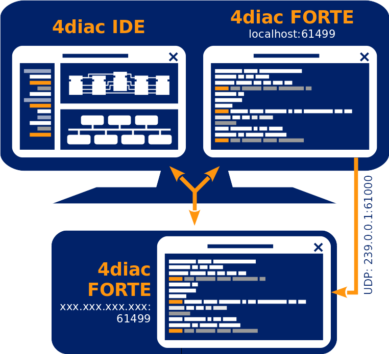
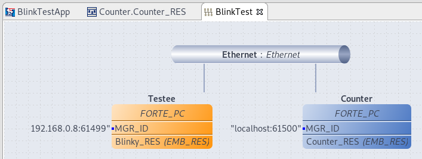
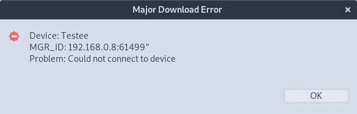

Step 2 will not run locally, but in another device.
This has not too much to show, but it helps understand the workflow when using real PLCs.
Since this page is more of an explanation than actually showing, it's up to the reader to actually implement it.
The image below shows the architecture of this step.

Steps to Deploy Remotely
- Select the PLC hardware or other hardware that can run 4diac FORTE.
You can check here the list of supported platforms.
The cheap options are Raspberry Pi, BeagleBoneBlack or another small board that runs Linux.
Another option would be to use another computer in your network.
- Compile 4diac FORTE for your PLC or other Hardware.
Check here for more information.
- Go to the System Configuration of the BlinkTest and change the address from localhost to the IP address of your device.
This is the easiest way to interact with an external device.
However, certain devices require a special device type.
To do this, delete the testee FORTE_PC and pull in the new matching device from the Palette and connect it to the network (map, insert communication FB and connect)
In our example the device IP address is 192.168.0.8, you may have another one. The port is 61499 by default.

- Switch to Deployment Perspective set the port to 61500.
- Launch Local Forte
- Run 4diac FORTE on the device.
This depends on the device you are using.
Normally it has some type of Terminal or FTP that you can access and launch the executable.
- Select both devices (i.e., Counter and Testee) in the Deployment Selection
- Click the Deploy button
- Check that the Deployment Console shows some output, and that no red warning appears on the right nor left of it.
If you get something red, something went wrong.
If an download error message pops up something went wrong too.
Here are the most common mistakes:
- wrong IP address
- the firewall is blocking
- 4diac FORTE does not run on the external device
Here is an example of an error message

- You can activate the monitor system and watch the project.
Now you can see that true and falsealternate as before.
Troubleshooting
In many cases, there are problems even when doing such a simple example. In most cases, it's a network problem.
If you get an error when downloading to the device, it might be that the IP:PORT is wrong, the device is unreachable (in another network behind a firewall maybe?) or 4diac FORTE is not running on the device.
In case you click the Buttons but do not see any reaction in the Blinking part, then there's a communication problem. Try the following:
- If you connected your device directly to your computer, add the computer's IP address as default gateway.
In some Linux versions, it should be something similar to:
$ ip route add default [ip] dev [interface]
where [ip] is the IP address of your computer, and [interface] is the network interface where it's connected (eth0, usb0, etc.)
- Make sure that the interface is prepared to handle Multicast packets.
- On Windows machine: run the command window with admin rights, and type:
route PRINT
This lists all the routes used by your PC.
You should check that the multicast address used by the application appears there and uses your device IP address as gateway.
For our example, it uses the address 239.0.0.1. If it doesn't appear, the address should be added and directed towards the device's IP address.
Use the command:
route ADD 239.0.0.1 MASK 255.255.0.0 [DEVICE_IP] METRIC 255
and then it should appear when printing again the routes.
- Another problem found in Windows is that even though the device receives the packets and replies, the application is not receiving them.
Even though the packet appears in Wireshark the application does not receive it.
A solution is to disable the FIREWALL completely. After that everything should work fine.
Where to go from here?
In the next step you will see how to create your own Function Blocks:
Step 4 - Create Your own Function Block Types
If you want to go back to the distributed application running completely locally, here's a link:
Step 2 - Distribute 4diac Applications
If you want to go back to the Start Here page, we leave you here a fast access
Where to Start
Go to top